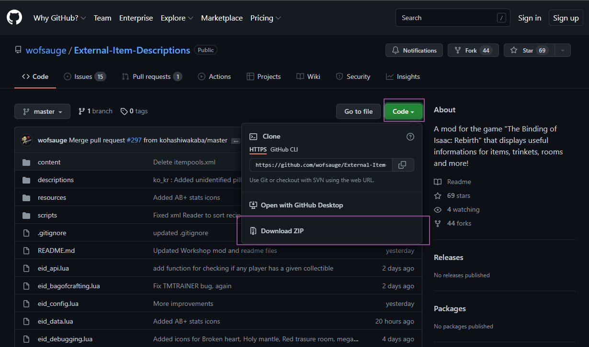
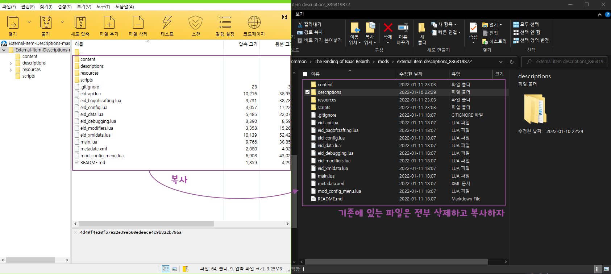

Github에서 바로 업데이트
업데이트를 더 빨리 받고 싶어요
아이템 설명 모드는 Wofsauge를 비롯한 여러 개발자가 개발하는 모드입니다. 따라서 개발자 및 번역가들이 Github 프로젝트에 먼저 올린 후 일정 간격 이후 스팀 창작마당에 업로드 됩니다. 스팀 버전보다도 빠른 업데이트를 받고자 한다면 Github 프로젝트에서 직접 받으시는 걸 권장드립니다.
Github에서 직접 받기
- https://github.com/wofsauge/External-Item-Descriptions 페이지 접속
- 오른쪽의 Code 버튼을 누르고 나온 네모 상자에서 Download Zip을 클릭합니다.

- 다운로드 받은 zip 파일을 열면 아래 그림 왼쪽처럼 설명 모드 파일이 보일텐데 이 파일들을 기존의 설명 모드 폴더에 그대로 복사하면 됩니다.

모드 폴더의 위치
- 애프터버스 + :
내 문서\My Games\Binding of Isaac Afterbirth + Mods\external item descriptions_836319872 - 리펜턴스 :
아이작 설치 폴더\mods\external item descriptions_836319872\
- 충돌 방지를 위해 기존 모드 폴더에 있는 파일은 전부 삭제하고 복사해 주세요.